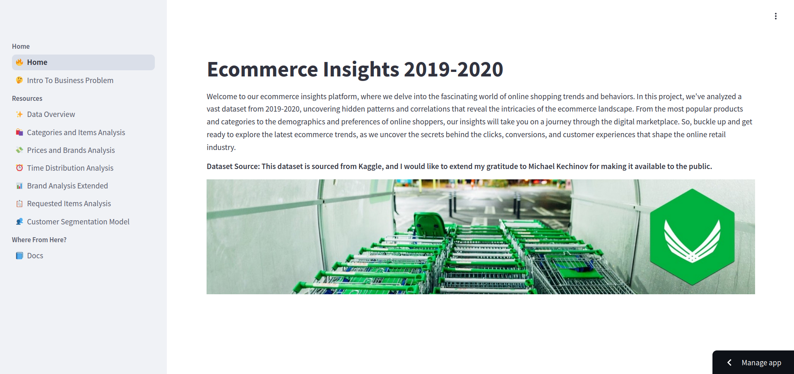
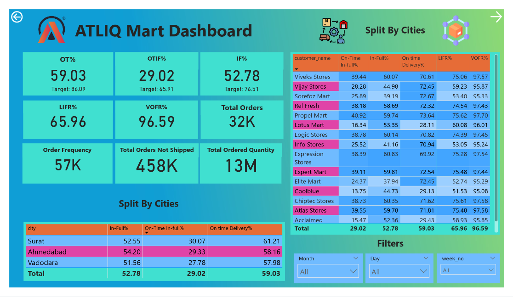

ShopEase E-commerce Platform Analysis
In the ShopEase project, I embarked on a comprehensive analysis of our e-commerce store to uncover customer behavior patterns and preferences. Tasked with providing actionable insights for our stakeholders, I applied RFM analysis to segment customers based on their purchasing habits. This led to the development of a machine learning model that identifies distinct customer segments, enabling personalized marketing strategies. From data collection to model evaluation, each step was meticulously executed to enhance customer retention, optimize our online store, and drive business growth.
 Click on the image to be redirected to project’s repo/hosting
Metropolitan Motion - The Analytic Route of NY’s Yellow Cabs

I embarked on a project to leverage the New York City Taxi and Limousine Commission (TLC) dataset to predict taxi fares and provide insights into the operations and business of the TLC. The solution includes an automated machine learning (AutoML) model for fare prediction, an infographic for data visualization, and SQL queries for data analysis.
I developed an AutoML model that predicts taxi fares based on various factors such as pickup and dropoff locations, trip distance, and time of day. This model helps the TLC in fare regulation and prevents overcharging by taxi drivers. Additionally, I created a visually appealing infographic that represents key insights and trends from the dataset, aiding the TLC in understanding patterns and trends to inform their decision-making process. I also used SQL queries to answer various business questions, such as identifying the most popular pickup and dropoff locations and calculating the average fare per trip. The final outcome is a comprehensive solution that enhances the TLC’s ability to regulate fares and gain valuable insights from their data.
Click on the image to be redirected to project’s repo/hosting
Atliq Mart Supply Chain Optimization - Journey to Supply Chain Excellence
AtliQ Mart, an FMCG manufacturer in Gujarat, faced customer retention issues due to delivery problems. To address this, the supply chain team tracked daily ‘On-time’ and ‘In Full’ delivery metrics using Power BI. This project aimed to identify inefficiencies and improve service levels through data visualization and analytics, ultimately optimizing supply chain operations.
I tracked a multitude of terminologies, including On-time and In Full delivery metrics, which we monitored on a monthly basis. Additionally, I analyzed product-level insights, such as delivery performance, inventory levels, and lead time, alongside customer-based insights, including delivery performance, order fulfillment rates, and lead time. These metrics were tracked and analyzed on a monthly basis, providing us with a comprehensive view of the supply chain’s performance and enabling us to identify areas of inefficiency and optimize our operations to improve service levels and customer satisfaction.
 Click on the image to be redirected to project’s repo/hosting
Atliq Telecom User Analysis - Mapping User Trends at Atliq
I tackled AtliQo’s user decline post-5G launch by creating a Power BI dashboard to compare KPIs before and after the launch. My analysis revealed key trends and led to 11 strategic recommendations to boost active users and revenue. This project is a foundation for future improvements and data-driven decisions.
To gain a deeper understanding of the impact of the 5G launch, I tracked and analyzed several key metrics, including Average Revenue Per User (ARPU), Monthly Active Users (MAU), and change in revenue. By comparing these metrics pre- and post-5G launch, I was able to identify areas of opportunity and develop targeted strategies to address the decline in user engagement and revenue.
Click on the image to be redirected to project’s repo/hosting
Attrition Prediction and Prevention: An HR Pilot Program Leveraging AutoML and Data Analytics
The HR Pilot Program aims to improve employee retention by analyzing a dataset of 15,000 data points, conducting a pilot program for new employees, and using machine learning to predict attrition. An AutoML model using PyCaret’s Decision Tree algorithm achieves over 95% accuracy in predicting attrition. The project utilizes Google BigQuery, Python, PyCaret, Google Sheets, and Looker Studio for data analysis, predictive modeling, and reporting.
DreamSpace: A Streamlit App for Exploring 3D Models of Home Furnishings and Decor
A Streamlit web application utilizing Plotly for interactive 3D visualization of everyday items. Browse and inspect dimensions of objects like bathtubs, beds, chairs, monitors, and sofas from all angles, powered by Princeton University’s ModelNet10 dataset.
Click on the image to be redirected to project’s repo/hosting
English Premier League Analysis - An Analysis of EPL Season 20/21
In the heart of football fandom, I embarked on a journey to unravel the mysteries of the English Premier League’s 2020/21 season. Armed with NumPy and Pandas for data manipulation, and Matplotlib, Seaborn, and Plotly for visualization, I crafted an interactive dashboard with Plotly Dash.
I gathered EPL 2020/21 season data, used NumPy and Pandas for data cleaning and transformation, created visualizations with Matplotlib, Seaborn, and Plotly, developed an interactive dashboard using Plotly Dash, and conducted EDA to uncover trends and patterns. The final outcome is a comprehensive analysis that provides deeper insights into the EPL and demonstrates the power of data analysis and visualization in sports analytics.
Soaring to New Heights: A Data-Driven Approach to Enhancing Customer Service at Sweatpants Air
A comprehensive analysis of customer satisfaction using Power BI, leveraging survey data to identify key drivers and areas for improvement. Interactive dashboards and visualizations provide actionable insights, enabling data-driven decisions to enhance customer service and experience.
Click on the image to be redirected to project’s repo/hosting
Brewing Success: A Data-Driven Analysis of Kraken Koffee’s Florida Stores
A data-driven project to enhance the performance of three Florida stores by analyzing sales, customer traffic, and satisfaction scores. Using Power BI and PowerPoint, a detailed infographic was created to identify areas for improvement and inform data-driven decisions. Despite limited data, accurate predictions were made to boost store performance, customer satisfaction, and profitability.
Click on the image to be redirected to project’s repo/hosting